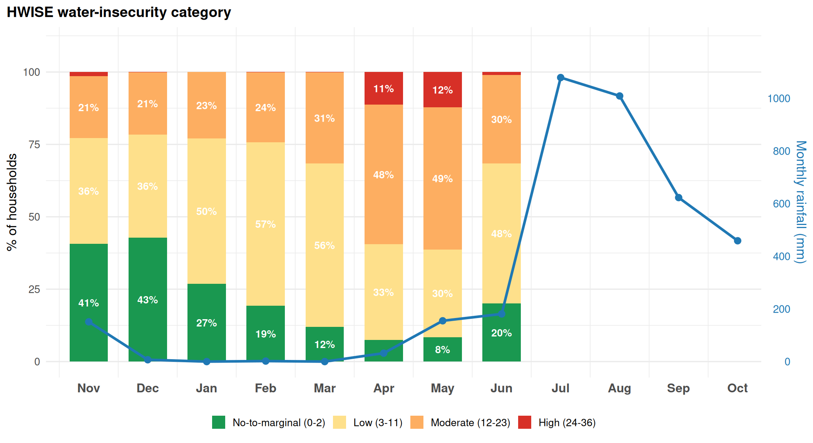
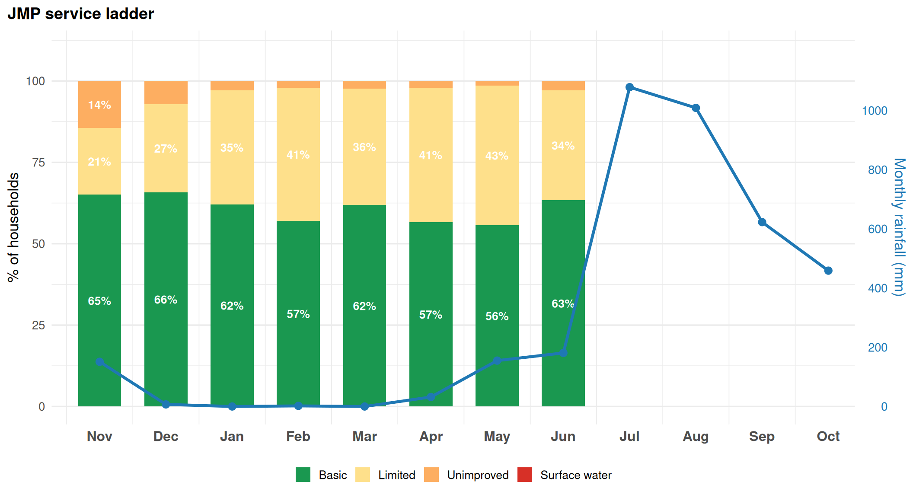

Household Survey Analysis
Brian Mahayie Waters
June 16, 2026 04:59
| Community | Nov | Dec | Jan | Feb | Mar | Apr | May | Jun | Jul | Aug | Sep | Oct | Total |
|---|---|---|---|---|---|---|---|---|---|---|---|---|---|
| Cockle Bay | 170 (170/170) | 170 (170/170) | 170 (170/170) | 170 (170/170) | 170 (170/170) | 171 (170/170) | 171 (170/170) | 160 (159/170) | 1352 | ||||
| Portee Rokupa | 170 (170/170) | 169 (169/170) | 170 (169/170) | 170 (169/170) | 170 (169/170) | 170 (169/170) | 170 (169/170) | 161 (161/170) | 1350 | ||||
| Dworzark | 340 (340/350) | 317 (306/350) | 347 (305/350) | 353 (305/350) | 350 (305/350) | 351 (305/350) | 349 (304/350) | 329 (276/350) | 2736 | ||||
| Total | 680 (680/690) | 656 (645/690) | 687 (644/690) | 693 (644/690) | 690 (644/690) | 692 (644/690) | 690 (643/690) | 650 (596/690) | 5438 | ||||
| Values show total surveys completed that month. Numbers in parentheses show households surveyed in all months from November through that month (complete cases / total unique households in community). | |||||||||||||
Demographics
Household Head Gender

Household Composition

HH Size Distribution

Drinking Water Spending

Domestic Water Spending

Source Ownership and Training
| Question | Yes | No |
|---|---|---|
| Own Water Source | 154 (22.3%) | 536 (77.7%) |
| Source Meets Needs | 66 (42.9%) | 88 (57.1%) |
| Training Received | 45 (6.5%) | 644 (93.5%) |
HWISE
Line Chart

Density Plot

HH Water Sources
Drinking Source
Source Type


Potable Drinking Source

Minutes Gathering Water

Domestic Source
Source Type


Minutes Gathering Water

HH-Source Connections
Cockle Bay
Drinking Water Sources
Domestic Water Sources
Dworzark
Drinking Water Sources
Domestic Water Sources
Portee Rokupa
Drinking Water Sources
Domestic Water Sources
Water Sources
Sources Access Distribution

Sources Used Distribution

Sachet Frequency

Collection Time

Collection Frequency

Water Gathering
Daily Helpers

Jerrycans Carried by Gender

School Days Missed

For a household where only boys missed school (say 3 boys missed 6 days, plus 2 girls missed 0 days): days_per_child = 6 / 5 = 1.2, but days_per_boy = 6 / 3 = 2.0, and that household is excluded from days_per_girl entirely since girls_late_school is 0.
Danger from Environment

Danger from People

Bullying

Water and Health
Stored Water

Injury Rate from Water

Sick from Water

Treatment Type

Water-Related Diseases

Standing Water

Water Status vs Rainfall
HWISE water-insecurity vs rainfall

JMP service ladder vs rainfall
